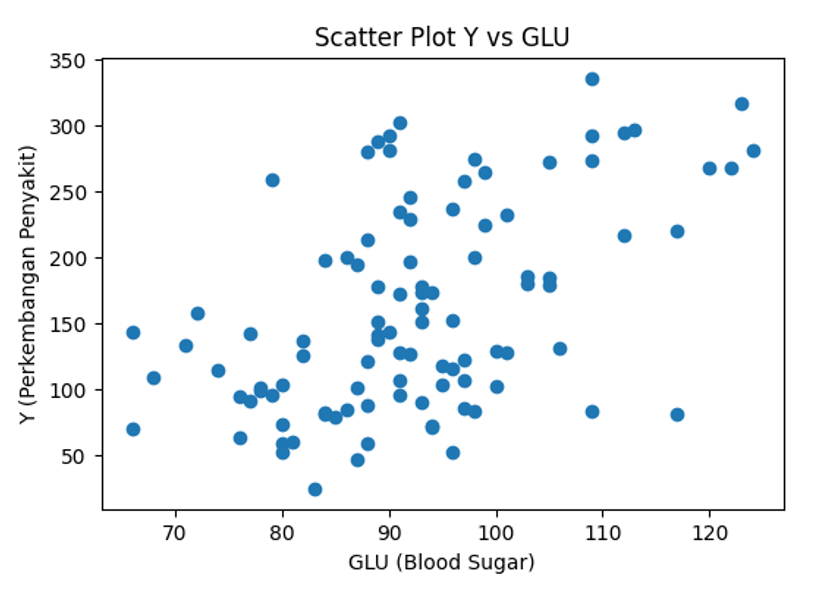

Nama: Michael Amazone
NIM: 049004287
Scatter plot digunakan untuk melihat hubungan antara variabel perkembangan penyakit setelah satu tahun (Y) dengan kadar gula darah (GLU).

Berdasarkan hasil analisis regresi linear sederhana diperoleh model:
Keterangan:
• Ŷ = Nilai prediksi perkembangan penyakit
• a = Konstanta regresi
• b = Koefisien regresi variabel GLU
“Apakah terdapat hubungan antara kadar gula darah (GLU) dengan perkembangan penyakit setelah satu tahun (Y)?”
Berdasarkan scatter plot, hubungan antara variabel GLU dan Y cenderung menunjukkan pola positif. Artinya, peningkatan kadar gula darah dapat diikuti oleh peningkatan perkembangan penyakit. Namun, persebaran data yang cukup lebar menunjukkan bahwa hubungan tersebut tidak terlalu kuat.
Nilai R² sebesar 0.258 menunjukkan bahwa variabel GLU hanya mampu menjelaskan sebagian kecil variasi perkembangan penyakit. Dengan demikian, kemungkinan terdapat faktor lain seperti AGE, LDL, HDL, TCH, dan LTG yang juga memengaruhi variabel Y.
| Statistik | Y | GLU |
|---|---|---|
| Count | 100.000 | 100.000 |
| Mean | 160.220 | 92.500 |
| Std | 77.831 | 12.401 |
| Min | 25.000 | 66.000 |
| 25% | 96.000 | 84.750 |
| 50% (Median) | 141.500 | 91.500 |
| 75% | 221.250 | 98.250 |
| Max | 336.000 | 124.000 |